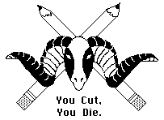

Gaieties '88 Writing Force
presents...
(version 2.0, July 1988)
(c)1988 by the Gaieties Writing Force. This work may not be copied in any way, shape, or form, except by all the Ram's Head weenies who want scripts so they can show their friends at home what cool stuff they're doing in college. Any rebroadcast or other use of this show without the expressed, written consent of the Gaieties Writing Force and the Detroit Pistons is strictly prohibited. Have you noticed what the writers' strike has done to Hollywood? Shut the whole town down. You need us. Love us, worship us, buy us beer. And what did David Letterman describe producers as? I quote, "money-grubbing scum!" Take that. Nyaaah. By the way, Hi Marty, Mike and Kieth! I sure hope the work on the holograms is going well, because I think they'll look great in the "Who Framed Roger Rabbit" parody, since we could use holograms for the 45 cartoon characters in that scene. I don't care how you do it, just "make it soar!" Tee hee.
--------------------------------------------------- NON-SEXIST INTRODUCTION TO GAIETIES
SCREEN DESCENDS AT WHICH POINT FBI SLOGAN IS PROJECTED. This is not the real FBI warning. It is a parody of one. It will be funny.
LIVELY VOICE OVER: The Zany madcap performance which you are about to see upon this stage is protected under the copyright laws of the United States and Stanford University. This wacky dramatization is being put on for non-commercial Mem Aud viewing only and any attempts to reproduce this show in any form whatsoever- i.e. retelling your favorite scene or scenes in the privacy of your dorm room may subject the offender to civil liability and severe criminal penalties under Title IV Section 237 of the ASSU Municipal Foul Offenders Code, minimum sentence entailing the forced reviewing of the freshman talent show and leading to a possible maximum sentence of enrollment in the Chem 30 sequence. In other words, do not copy this show. Please. Please, please, please don't copy this show!!! You don't want to make me angry. Really. You wouldn't like me when I'm angry.
CURTAIN RISES TO REVEAL THE SINGERS, DANCERS, AND MANY EXTRAS AND OTHER OBNOXIOUS ACTOR-TYPES AROUND THE BARBECUE PIT TYPE-THINGY. A BIG SIGN MAKES CLEAR THAT THIS IS "THE AXE COMM BARBECUE" THERE IS A BIG BARBECUE PIT (OR SOMETHING) AND DAVE, APRIL, AND ELVIS ARE SITTING AROUND WITH THE AXE COMM (5 [or so] OF THEM ARE ALL ATTACHED TO THE AXE. ALL THE TIME. THEY ALL WEAR JEANS, LONG SLEEVED WHITE SHIRTS, AND RED OBNOXIOUS POLO SHIRTS OVER THE WHITE SHIRTS. UNDERSHIRT OPTIONAL.). YOU CANNOT SEE THAT THE AXE COMM IS ATTACHED TO THE AXE YET, THOUGH.
Axcomperson1: Oh gee, isn't it mighty fine that we have the axe.
Axcomperson2: Yes. I feel it positively reflects on our self-worth as human beings.
Axcompeople begin to talk among themselves. Random barbecue attendees mill around. One approaches the committee with small child.
Randomperson1: OOH The axe committee!
Axcomperson3: Hey, stop right there! Are you a Weenie?
Randomperson1: No, of course not! Can my little girl see the axe? Can she? Can she pleeeese? You see she's dying of Andy Gibb's disease and it's her last wish to see the axe, so can she please?
AxeCommitte (together): No! It's ours! Get away!
Child starts to cry.
Randomperson 1: Aaaww, now you've made her cry!
Axecomperson 3: Okay, okay, as long as you're not weenies I guess we can...
The entire Axe committee does the Axe Yell: "GIVE 'EM THE AXE THE AXE THE AXE, ETC." After the second "RIGHT IN THE NECK" The child runs off screaming.
Axecomperson 4: Geez, that seems to happen more and more these days.
Entireaxecommitte: Maybe it's our deodorant?
Axecomperson 2: No, it's not! It's because, more than anything else, WE LOVE OUR AXE!!!
[Song: KEEP YOUR FILTHY HANDS OFF MY AXE. A cute little tune about how totally anal-retentive the AxeComm is. They try to dance while chained to the Axe, and it looks gloriously silly. I'm sure the composers will have lyrics for this to us soon... hint, hint]
Elvis: C'mon Dave, April, we're Stanford students - they've gotta let us see the axe!
April: I don't know Elvis - did you see what they did to that other guy?
Elvis (does his Presley impression): Uh uh huh!
Dave: Don't be such wooses guys - we've gotta be daring, brave, bold - we've gotta show spine - we've gotta get this show started! We've...
April (she cuts off Dave): Okay, I'll ask. (She steps forward) Excuse me - do you think we three - ahem - Stanford Students could see the axe?
Axecommittee: NO! (They whisper among themselves. random lines come out. "We must protect the sacred axe - They are main characters and we're only minor characters - Look at you, you're barely a cameo - Am not - You don't even have a line, go ahead and try and talk! - Mmmphmmph!)
Axecomm2: Wellllll, seeing as you are THE MAIN CHARACTERS : David, (LOUD MUSIC HERE) the simple, yet savvy roommate-type and possible love interest of April May Jüne, (SEXY MUSIC HERE) the strong-willed leading female-type - and possible love interest of Dave; and Elvis, (PRESLEY MUSIC HERE) the sarcastic - yet strangely human character - I guess you can see the axe.
SIGHT GAG: THE ENTIRE AXE COMMITTEE, CHAINED TO THE AXE WITH THOSE FLEXY BIKE CABLES SHUFFLES OVER TO SHOW THE TRIO THE AXE. MUCH LIKE THE CHAIN GANG IN WOODY ALLEN'S TAKE THE MONEY AND RUN. AND OH SO FUNNY. MMMMM.
The three marvel at the axe. April, Elvis and a few AxeCommies say "The Axe!" in quick succession, then...
Dave: It's only a model!
Everyone: Shhhhh!
ENTER PETITIONER (to be explained)
Petitioner: Excuse Me...
Axecomm1: What? Are you a weenie?
Petitioner: No, of course not!
Axecomm3: Well, okay then, you may approach.
Petitioner (approaches Gretchen (Carlson), an AxeCommie): Hi, I'm a Stanford Freshman. My social life's been a little slow since I got here, and so I was just wondering if you'd like to go out on a...(real huge pause)...a date? (Big huge Orchestra riff: dun dun dunnnn!)
Everyone on the whole damn stage at this point: A DATE!?
Gretchen (squirming): Uh, well no. I don't. But don't be disappointed. Have you considered going to the Undergraduate Dating Center in Old Union?
Petitioner: What's that?
Gretchen: It's an bureau set up to deal with geeks... I mean people like you. They can find just the kind of person you're looking for. (April starts to escort him to side of stage) In fact, maybe you should go there... right... now! (she finishes the sentence and virtually shoves him off the stage)
Dave: Gretchen Elizabeth, that was cruel, mean, and downright heartless.
Gretchen: It worked, didn't it? Hell, maybe they could even help him. Besides, I'm a Kappa! (with this, the orchestra starts into "Here She Comes, Miss America" as Gretchen strips down to a swimsuit and a sash that says "Miss Gaieties". Two assistants come out and crown Gretchen and give her a bouquet of roses. She beams, waves to the audience, and struts offstage. No one seems to notice...)
Elvis: (looks into the barbecue) These hot dogs look raw! They look like they're about to get up and walk away. What say we order a pizza, eh?
PHONE IS TOSSED ONSTAGE (from first lighting beam, suggests Keith Cross). ELVIS ORDERS. AT THIS POINT 3 LARGE HOT DOGS (THAT IS ACTORS IN HOT DOG COSTUMES, OR "WEENIES", UNDERSTAND?) GET UP FROM SOME HIDDEN PLACE. THEY WALK OVER TO AXE COMMITTEE. THEY (THE HOT DOGS, NOT THE AXE COMMITTEE) HAVE GERMAN ACCENTS.
Weenie1: Phaze vun uf ze master plan iz cumpleet! Ze Acks Cummittee suzpeckts nussink!
Weenie2: Kud vee order ein pizza mit Saurkraut, also?
Weenie1: (Bopping Weenie 2 with his giant weenie hand) Dummkopff! Dummkopff! Now izz not ze tyme for füd! Vee must put faze too uf ze master plan into ackshun - unt steel ze ACKS!
ALL WEENIES NOD (THIS WILL LOOK VERY FUNNY, TRUST US).
All Weenies: Yah, Yah!
THE WEENIES APPROACH THE AXE COMMITTEE
Axecommperson4: Halt! Are you weenies?
Weenie 2: Yah!
Weenie 1: Nein, Nein! I mean - no, no, Weenies? Of course not! What do you mean? (Kicks Weenie 2). We are just Hot Dogs out for morning stroll.
AxeCommperson: Well, okay then. I suppose this is a barbecue. Hot dogs are okay.
THE AXECOMMITTEE GOES BACK TO TALKING. THE WEENIES CONFER.
Weenie 1: Otto! Now iz our chance! Helmut, get reddy!
(BIG PAUSE......)
All Weenies Together: GET IT!
THE WEENIES GRAB THE AXE, MUCH TO THE CHAGRIN OF THE COMMITTEE, WHO ARE DRAGGED ALONG BEHIND THE AXE, OFFSTAGE.
April: The Weenies have stolen the Axe and The Axe Committee! Get them!
MAYHEM. PANDEMONIUM. ETC. IN OTHERWORDS, THE WEENIES RUN OFF, AS LIGHTS DIM AND THE VARIOUS PEOPLE ONSTAGE BASICALLY DISAPPEAR OFFSTAGE. CHACE MUSIC. OR CHASE MUSIC, IF YOU LIKE. THE WEENIES & COMMITTEE RUN ON STAGE AND OFF AND 0UR THREE UNLIKELY HERO-PERSONS FOLLOW IN HOT PURSUIT. AFTER VARIOUS ENTRANCES AND EXITS, THE WEENIES NO LONGER APPEAR AND OUR THREE HERO-PEOPLE ARE LEFT ALONE, CENTER STAGE, IN FRONT OF THE CURTAIN, WHICH HAS DROPPED SOMETIME DURING THE CHASE. THE CHARACTERS ARE BREATHING HEAVILY, AS IF THEY'VE BEEN RUNNING. LONG PAUSE. APRIL LOOKS AT ELVIS.
April: Well?
Elvis: Well what?
Dave (stage whisper): Your line!
April: I don't believe this. We've been practicing the whole quarter and you forget your line in the first scene!
Elvis: Me? I don't have a line. One of you must have a line.
April: Dave?
Dave: Not me.
April: Well I certainly don't have one.
Elvis: Oh Shit. Something's not right here!
AT THIS POINT, SLIMY TECHIE TYPES (OVERALLS, PLEASE) BEGIN TO PLACE THE PROPS FOR THE GAME SHOW SCENE IN FRONT OF THE CURTAIN.
April: Who's got a script?
(A WEENIE SNEAKS UP AND GIVES APRIL A SCRIPT.)
THE THREE PORE OVER THE SCRIPT. LOOK UP AT AUDIENCE.
All Three: Uh Ohhhhhh.
April: I can't believe it. We're not here.
Dave: What do you mean, "not here" - I'm here, Elvis is here...
April: No, no, I know we're here. I mean we're not here (pointing), in the script.
Elvis: How can we not be there? We're the lead characters!
April: Not any more. We've fallen out of the script.
Elvis: But that's not fair. I wanna go back and chase the weenies around like in a normal stupid Gaieties plot.
Dave (overacting): Too bad Elvis, it seems that we've stumbled through a hole in the plot - and now we're stuck in some God-forsaken portion of the nether-regions of lost scenes.
Elvis: You mean...
Dave: That's right Elvis, while on some other plane the weenies hold our treasured axe and romp and frolic to their heart's content in the real plot - we sit here in a veritable limbo among scenes discarded from some of the most horrendous dramatic efforts ever to be produced.
Elvis: You mean...
April: Cut the dramatics Dave. We're fucked. How are we going to get back into the plot? (HANDS SCRIPT BACK TO TECHIE FROM WHENCE IT CAME.) Excuse me, but can you tell us how to get back to the real plot?
Techie (pointing as he goes): Sure, start behind this podium, go straight through the dorm life scene, take a right at the mystery scene and a left two scenes later. If you hit the band you've gone too far.
April: Thanks.
(TECHIE EXITS.)
GAME SHOW SCENE:Scene: April and Elvis go behind one of three bidding podium platform thingys like in Price is Right. Price is Right (cheesy gameshow) music is playing. Dave goes over and starts fondling a model of a Wilbur dorm room -- i.e., a large shoebox --which is rotating on the stage. Two models are standing in it, pointing out its obvious beauty. Dave does not fondle them.
April: C'mon let's get outta here and find the plot.
Elvis: Yeah, and get the Axe back too. C'mon Dave!
Dave: No, dammit, I'm unguaranteed. (Pointing) I want this dorm room!
Elvis: Don't be a fool. Can't you see that's [whatever dorm has block tickets, from Wilbur or Stern].
Dave (passionately): I don't care; I want it. Besides, this is California--we have to be on a gameshow... It's the law. (heads back to podiums)
Johnny: (Johnny is the announcer for the show, and hence is only a mysterious distended voice from offstage) It's the Price is Right... starring Bob Barker.
(enter Bob Barker "Applause" sign goes on. Two contestants enter and fill up the other podium thingys)
Bob Barker: Thank you, thank you for that lovely hello. And welcome to "The Price of the Square Pyramid is $18,249." Johnny, tell them what they've won.
Johnny: No, no Bob, not yet. We need to meet our contestants first!
Bob Barker: I knew that. Johnny, who are our first contestants on The Price is Right?
Johnny (maximum condescension): Why don't you ask them yourself, Bob, they're right in front of you.
Bob: Oh, uh, yeah. Contestant number one, tell us a little about yourself. You're from Redondo Beach, California?
Contestant 1: (HITS BUZZER QUICKLY) That's right, Bob.
Bob: Correct. For $100! Do you have any kids, Contestant #1?
Contestant 1: (HITS BUZZER AGAIN) I have three children, Bob. Their names are Katy, Bill, and....uh.....um.....
Bob: Contestant 2. You get the chance to steal.
Contestant 2: (HITS BUZZER) Bob, his third child would be Sally.
Bob: (Applause) Correct for a hundred dollars. What do you do for a living, Contestant number 2?
Contestant 2: I'm a mechanical engineer.
(Loud sound buzzes, indicating incorrectness)
Contestant 1: (Hitting buzzer) He's a child psychologist, Bob.
Bob: That's exactly right! (Applause sign) A hundred dollars for you. Johnny, tell them what they've won.
Johnny (despairingly, frustrated, [insert adjective here]): Not yet, Bob. But here's the first item up for bids... It's a lovely Wilbur dorm room. Yes you'll relax in the exquisite luxury of this eight by five suite. Rated by the Housing Office for you and up to three of your friends. The room comes fully furnished with bed, desk, and towel rack. All this can be yours, if, the Price is Right.
Bob: Now, Contestant number one, what do you bid on this room?
Con #1: Does that come with a sink and bath?
Bob: Johnny?
Johnny: Oh, Christ! No, of course not.
Con #1: 1.3 trillion dollars.
Bob: Dave, April May Jüne, and Elvis, what's your bid?
Elvis: (after consulting briefly) That would be 251 dollars and 31 cents.
Bob: Contestant #2?
Contestant #2: I bid one dollar, just like you told me before the show.
Bob: Shhh!
(Bell goes off)
Bob: Well, it looks like somebody's exactly right... Shall I break the suspense? (opens envelope) And the actual retail price of a Wilbur dorm room is... $251.31. Dave, April, and Elvis, come on up here. (they follow him to center stage) April, since you bid exactly right, you get to come on over and reach into my hundred-dollar pocket. (April reaches into Bob's pocket. He squirms) Whoa!! It's not a gold bar... heh, heh, heh... it's a hundred dollar bill. Keep reaching. (April continues to fish around.) Whoa, whoa, whoa!! (She finally gets the hundred dollars). Oh, that was great, April. Looks like it's time for Hollywood Square! Now let's meet our returning champion.
(The Wilbur dorm room has since been wheeled off, and Duke Squidlow bounds onto stage.)
Johnny: Duke Squidlow is an Engineer from La Jolla, California. He's married, with two lovely children, Jack and Diane, who are in the studio audience tonight. (Family stands up and waves.) He enjoys raquetball, scuba diving, and ballet. Unbeknownst to his wife, about three years ago Duke had an extra-marital affair with his secretary, Pam, who is also in the studio audience tonight. (Pam stands up and waves.) A year ago, Duke killed the family dog out of anger, telling the children it was hit by a car instead. If found guilty of the charge in...
(Duke pulls out a gun and fires offstage. He then goes behind a vacant thingy)
Johnny: Aaaaaaaaaagh!!
Bob: Nice shot, Duke. Let's meet today's square.
(A single Hollywood square is wheeled onto stage. The name "Paul Lynde" is lit up in front of the desk behind the square. Two burly stagehands drag the corpse of Paul Lynde onto the stage and drape him over the desk.)
Bob: Since we're too CHEAP to actually build nine squares, it look like one will just have to do. Dave, April and Elvis, you're our challengers, so you get to go first. Go ahead, pick a square.
Elvis: Any square?
Bob: Sure, whatever one you want.
Elvis: I'll take George Gobel.
Bob: George Gobel's not here.
Elvis: OK, we'll take Audrey and Judy Landers.
Bob: (hissing) They're not here either, dammit.
Elvis: Wayland Flowers and Madam?
Bob: (quite pissed now) NOOO!! ALL WE'VE GOT IS PAUL LYNDE!!
Elvis: Allright, I guess we'll take Paul Lynde for the win.
Bob: OK, Paul, you listening, here's the question. What's the average weight of the Hungarian Buffalo? (No answer from Paul.) Paul? Paul? Well Elvis, Paul appears to be dead.
Elvis: I think you're right. I'll agree with that.
Bob: (very confused) Judges?
(After a brief pause a bell sounds indicating correctness.)
Bob: Judges say that's right. Paul Lynde has in fact been dead for three years. Paul Lynde, always the master of impersonation, let's see you do your Andy Gibb. (SILENCE) Outstanding, Paul. Now let's see your [topical dead person]. (SILENCE) Great, Paul. Now let's see you do Olympic Bronze Medalist Debi Thomas. ( PAUL FALLS FROM HIS PERCH WITH AN AWKWARD THUD ONTO THE FLOOR). Paul, you kill me. Let's give a big round of applause for Paul Lynde. (APPLAUSE SIGN) Congratulations, Dave, April and Elvis. you've won. Duke, too bad you didn't have a chance to play. Now get the hell out. It's time for the new champions to play... Eighteen thousand two hundred and fourty-nine dollar pyramid!!(Duke leaves) And it's a great pleasure for me to introduce tonight's guest stars on the pyramid... all the way from Stanford University, please welcome President Donald Kennedy and his lovely wife Robyn! (Don and Robyn enter on side of stage opposite the one with podium thingys. They sit at that silly "Pyramid" kind of table (you know, with the TV thingy that comes out of it) Bob comes over to chat with them) Well, Don and Jean, it's great to have you here with us. But a lot of people claim that game shows are cheap and tawdry, promoting an unhealthy greed for money. Is being here a big change from the atmosphere at Stanford?
Don (after a moment's thought): No. Not really.
Bob: All right, let's play, shall we? Your category is things associated with Big Game. Mrs. Kennedy, please describe for President Kennedy these things that are associated with Big Game. You have thirty seconds... go!
Robyn (these lines could be stuffed in the desk, so memorization is not key): O.K., Don, this is a... beverage that a lot of Stanford students drink at football games...
Don: Diet Coke?
Robyn : No, no, it's got a bit more of a kick to it... uh, it's made of barley and hops and...
Don: Metamucil?
Robyn : No, forget it. Pass. Uh, this is something you do in the sunlight...
Don: Plant a garden?
Robyn : No, you put on lotion and you lie on your back, perhaps with a few books...
Don: Study?
Robyn : Pass! O.K., these people are odious and terribly stupid...
Don: The Hoover Institute?
Robyn : NO! They're on the east side of the bay!
Don: The Oakland A's?
Robyn (almost insanely): NO, DON, THEY'RE WEENIES, DARN IT! GET IT? EAST BAY? STUPID? WEENIES!! WEENIES!!
Don: Oh, you mean Cal, don't you? ("Time up" buzzer sound effect. Robyn's head is in her hands. Don's confused) Oh, did I get it?
Bob: Oh, no, I'm afraid time's up. But we do have some lovely consolation prizes for you (model brings in Monopoly-size box) It's the home version of the Centennial Campaign... fun for you and up to three of your friends, from Milton Bradley!!! Thanks for playing.
Don (takes box from exiting model): Uh, gee thanks....(Don & Robyn get up and start to leave the stage. Don chats with her on the way out)
Now what's this about studying with lotion and drinks with barley and...
Bob (back to Dave, April and Elvis): Well, it looks like the score to beat is zero. Dave and Elvis, you haven't played yet so you're up. (they cross stage to pyramid desk thingy) Who'll give and who'll receive?
Dave: Isn't it much better to give than to receive?
Bob: I don't care, just pick one.
Dave: OK, I'll give.
Bob: Allright. You need to beat zero. It's gonna be pretty tough, because your category is Nouns.
Elvis: Wait, don't we get to pick?
Bob: No. Now go over and sit down. (They go over and sit down.) Forty-five seconds please... And, go!
Dave: (staring blankly into monitor thingy) OK, this is small.
Elvis: I don't know? More descriptive!
Dave: It's not very big at all. It's small. Almost tiny, but not really.
Elvis: What? What? I don't get it? Pass, pass.
Dave: It's medium sized. It's not big, but not really small either. (Gesturing.) Like, this big. Pass. (Elvis is still confused.) This is brown. It has things on it. It sometimes moves if you pick it up.
Elvis: I don't know. More specific. Pass.
Dave: Next one, next one. This is also small. But not as small as the first one.
Elvis: I didn't get the first one!!
Dave: Oh yeah, pass. (Next word.) OK, nobody likes this. It's never funny.
Elvis: The Chapparal.
(Bell sounds. One point is indicated somewhere, as the clock is just running out. Stage that fucker, Jill.)
Bob: THAT'S RIGHT!! Congratulations, you move onto the bonus round.
All three: (Noticeable enthusiasm is lacking.) Whee...
Bob: Come on over and let's play for $18, 249.
Elvis: We don't need the money, we just want to find the plot.
(Sign changes from "$18,249 Pyramid" to "Plot Pyramid")
Bob: OK. Strap yourselves in to your seats. I'll remind you of the rules. You may not gesture, rhyme, eat, drink, or smoke. And, since Anthony Kennedy is now on the Supreme Court, you may not commit any impure acts onstage or hire any minorities. And if you throw toilet paper over the lights we'll beat you to a heaving pulp. Understand?
Dave: OK, sure.
Bob: Sixty seconds please. And... GO!
(First sign turns over. It is illegible to the audience.)
Elvis: I'm sorry but I can't go down for you. I can't turn right, but I can turn left three times. Error!
Dave: What "Karel the Robot" might say.
Bob: Right, next. (Sign turns around to reveal a "P")
(Next sign.)
Elvis: Uh, uh, uh, uh. I don't know. Uh, uh, uh. Pass.
(Next sign turns.)
Elvis: World peace. Elimination of world hunger. Complete equality for all races and genders. No more poverty. Universal laminated student ID card.
Dave: Promises made by ASSU Senate candidates.
Bob: Right, next. (Sign turns around to reveal an "O")
(Next sign.)
Elvis: Death, Disease, Famine.
Dave: The plagues of Egypt?
Elvis: Plague, Frogs, Blood, Locusts, Death of the first born male child.
Dave: Stern Food! (Sign turns around to reveal a 'T'.)
Bob: That's right, back to the one you passed on.
Elvis: Uh, uh, uh, uh.
(Buzzer goes off).
Bob: Oh, I'm sorry. Your time is up. I'm actually not surprised you couldn't get that last one. I couldn't think of anything for it myself. The answer was: Things an ASSU senator does.
Dave: Oh!! I should have gotten it.
Bob: Too bad! Johnny - I mean Judges, do we have any lovely parting gifts for our three contestants?
Weenies come out, gesturing to "Centennial Campaign" boxes
Dave: Hey, those aren't hostesses?
April: Those are weenies in obscenely-cut sequined dresses!
Elvis: Get them!
THE CAMPUS EVANGELIST SCENE: In front of Red. At one end of the stage a podium stands. Facing it is a congregation of people who either sit on the stage or in folding chairs. The men and women fan themselves, waiting. Suddenly the lights dim and two spots move quickly about the curtain (just like at the beginning of any cheesy show, q.v. the Newlywed Game). A booming announcer's voice says:
Announcer: Welcome one and all to Reverend Sister Cindy's White Plaza faith healing - where our motto is "You sin, we win." Sister Cindy will join us in a moment, but first news from the world of sports. In Intervarsity Christian competition today it was Adventists 9, Episcopalians 7. And remember, on the way home tonight, heed Billy Graham's advice and "ram heathens for Jesus". And now, without further ado - Sister Cindy!
Cindy enters, wearing a conservative but cheap dress that covers ankles, wrists, neck etc. The congregation applauds. She stands behind the podium. All speak with thick Southern accents.
Cindy: Oh, thank you, thank you for your lovely welcome! God loves you for it, he does! People, I spoken to you of goodness in this world, have I not?
Congregation: Amen!
Cindy: And I have spoken to you of the greatest good - Jesus?
Congregation: Hallelujah!
Cindy: And I have spoken to you of sin - how we hate sin, am I right?
Congregation: That's Right!
Cindy: And how we despise fornication?
The congregation is noticeably silent.
Cindy: I said how we despise fornication - don't we?
Congregation: (noticeably unenthused, mumbling quietly) Hallelujah.
Cindy: I can't hear you!
Congregation: (a little louder) Hallelujah.
Cindy: That's better. Today my flock I want you to tell me your temptations - tell us and be rid of them! Tell us and save yourself! Tell us and send that temptation back to Satan! Tell us of it Dan! (Cindy goes to her).
Dan (total frat dude): I'm tempted by you Cindy! I want you!
Cindy: (ruffled by this) Dan, let's return to your temptation a little later, shall we? Tell us your temptation, Bud! Let me heal you! (she goes to Bud).
Bud: I'm tempted by sheep Cindy. A lot.
Cindy: Whoaa! (whirls around, repulsed by the thought of touching Bud) Bud heal thyself! (She goes to another layperson) And you Cynthia!
Cynthia: I'm tempted to pledge Kappas!
Cindy: (crosses his fingers at her) Devil get thee back! And you Suzanne?
Suzanne: Oh Sister Cindy, it's horrible, it's evil it's awful!
Cindy: Tell us Suzanne, redeem thyself!
Suzanne: Oh Cindy I can't - it's tahrabble!
Cindy: Child, confess, confess thy transgression!
Suzanne: I LIVE IN BRANNER! AND I LOVE IT!
Cindy and the congregation stand up and recoil in horror, aghast. They all gasp!
Congregation: KILL HER!!
(they chase her offstage)
DORM LIFE SCENE: CURTAIN RISES AND DORM MEETING IS ALREADY IN SESSION. APRIL, DAVE, AND ELVIS WALK IN LATE.
FROSH DORM PRESIDENT: (Officious bitch. The dorm is her whole life. Thinks she's in control, but the whole dorm thinks she's just another clueless frosh) (To the late trio) Well, nice that you could make it! I'm sorry that our dorm meetings are so inconvenient for some people.
APRIL - Excuse me, is this the dorm scene?
PREZ - Yes and you're late! Sit down. I'm really very sorry that some people don't have much pride in our dorm as the rest of us. We're all one big family, you know, here in [WHATEVER DORM HAS BLOCK TICKETS FOR THAT NIGHT].
ELVIS - Christ, man. How'd we end up in this scene? I mean [WHATEVER DORM HAS BLOCK TICKETS FOR THAT NIGHT]'s just a hell hole.
PREZ - If we may continue, please. This Tuesday from 9:00 a.m. to 9:00 p. m., all bathrooms will be off limits due to condom machine installation.
DAVE - Gee, I can just see people beating down the door for that one.
ELVIS (ASIDE) - What they really need is paper bag dispensers instead of condom machines.
APRIL HITS ELVIS HARSHLY.
PREZ - (GLARES AT DAVE) And while we're on the topic of bathrooms,as you all know we've been having some problems because some people have been using the toilets - but they haven't been sitting on them.
ALL: Yuck. (Perhaps April should give Elvis an accusatory stare here?)
BRENT (THIS CHARACTER CAN BE FEMALE IF YOU LIKE) : Look out, guys, we've got money-grubbers!
SURE ENOUGH, THE SET HAS BEEN INVADED BY SEVERAL SMALL CLANS OF STUDENTS BEGGING FOR DORM CHARITY FUND HAND-OUTS. THEY SING THEIR APPEALS (this being a musical and all)
[SONG -- GIMME MONEY. I still think we should have done the "Bathroom Down The Hall" song, but Jill says that mold and mildew are out of the acceptable range of Gaieties experience]
PETITIONER COMES IN
PETITIONER - Hi. I'm a Stanford freshman and the Undergraduate Dating Center in Old Union said they could get me a date if I can get petition signatures from 10% of the Stanford student body, just like in spring elections. I've calculated that if I can get twenty point six signature from each house on campus, I'll be able to have a social life. That even includes the Theta Delts, that is if they can spell their names. So if you guys would care to help me, I'd really appreciate it.
SUZIE: C'mon guys, let's give him a break...
DAVE (stands up) : What are you talking about? Would you go out with this guy?
APRIL: Oh yeah? Well I think he's cute. A hell of a lot cuter than you.
SIGN COMES OUT (slide?) - "DEVELOPMENT OF ROMANTIC TENSION."
DAVE - (CLUTCHES HIS HEART) Ohh! Ohh! Oh, well break my heart! You really hurt me deeply April. When's the last time you had a date?
DORM GOES OOOH!
APRIL - Oh... shut up! (TO THE DORM AS WELL AS DAVE)
DAVE - Hey, there's an intelligent comment. Probably took you a long time to think of that one. ...about as long as it's been since you had a date.
(APRIL HITS DAVE, HE SMIRKS AND LETS IT END WITH THAT)
PRESIDENT: Okay you guys let's take a vote on Mr. Clueless.
APRIL: Ahem.
PRESIDENT- I mean our guest. Straw Poll (ASK WRITERS). (HALF DORM VOTES YEAH WHILST HALF DORM VOTES NAY) Hmm. We seem to have a tie. There's only one way to break this deadlock. According to Article VII SECTION III of the dorm Constitution, all voting ties must be broken by the R.F.'s. Ohhh, R. F. Siskel! R.F. Ebert!
SISKEL AND EBERT ENTER. EBERT IS CARRYING TONS OF FOOD, TWINKIES DINGDONGS ETC. HE IS IMMENSELY FAT AND WEARING BIG UGLY BROWN SWEATER. SISKEL HAS JAR OF TURTLE WAX AND IS WAXING HIS HEAD WHILE LOOKING IN MIRROR.
SISKEL - (SITS DOWN WITH EBERT AND FACES AUDIENCE, CROSSING THEIR LEGS SIMULTANEOUSLY, SNEAK PREVIEWS MUSIC PLAYS) Eugene Milfred Finklestein is a very real individual. I can relate to him in many ways.
APRIL - Damn straight.
DAVE - Oh my lip.
SISKEL - He shows a lot of heart, strength, and courage. Here's someone who won't accept the hand life has dealt him. He's trying to make a change and, really, I think he does a very convincing job.
EBERT - Gene, I really don't think we're looking at the same guy here. He's got no drive, no ambition, he's just a... a... a Eugene! C'mon, this guy's idea of sexual consumation is to actually say "hi" to a girl. I think he's simply just a pathetic, wimpy character, and frankly Gene, I don't find it surprising at all that you related to him.
SISKEL - Roger, I disagree heartily with you. Finklestein is no less than an authentic tragic hero in the highest sense and actually I think your lack of sensitivity is more a reflection of you than this character.
APRIL - Give him hell Gene!
SISKEL - Roger, what's more, I think that....
EBERT - (INTERRUPTING) ...well Gene maybe the reason you're defending this guy is that you see a lot of your wimpy, weaselly, geekish past and present in him.
SISKEL - (FURIOUS) Damn it Roger!! You inconsiderate blimp!!! You never let me finish what I was going to say....
EBERT - (INTERRUPTING) Well Gene I think you're pretty inconsiderate yourself!!! Why the hell don't you buy a damn hat to cover the glare from your head!!! (PUTS ON SUNGLASSES)
SISKEL - You fat slob!!!
EBERT - Pipsqueak!!!
DAVE - Holy shit, Batman (for Matt).
SISKEL - Thunder thighs!
EBERT - Pencil neck!!!
SISKEL - That did it!!!!
SISKEL AND EBERT PUMMEL EACH OTHER VERY HARSHLY, SMUSHING TWINKIES AND DING DONGS OVER EACH OTHER'S HEADS. THEY ROLL AROUND ON GROUND AND ROLL OFF STAGE, FALL INTO ORCHESTRA PIT, EXPLODE (hi Jill!) NO, SERIOUSLY, C.L.P. WANTS GUYS IN WHITE JACKETS TO TAKE 'EM OUT IN STRAITJACKETS. I STILL WANT THEM TO BLOW UP.
PRESIDENT (LOOKS AT PETITIONER): We'll let you know.
PETITIONER LEAVES, HEAD DOWN
PRESIDENT: Now, we'll move into RA announcements. First we'll hear from the third floor RA, Sam Kinison.
SAM KINISON STANDS UP, PUSHING CLUELESS FROSH DWEEB OUT OF HIS WAY. HE IS IMMENSELY FAT AND WEARING BERET. HE IS PISSED.
SAM - (SCREAMING) Ohhh! Ohhhh! Ohhhh! Well, I'd just like to get a couple things off my mind that have been irritating me just a little bit this week. First of all, I mean it's no big deal but I was only asked for the master key a total of forty fucking times!! Ohhh! Ohhh! Ohhhh!! Don't you people think that I have anything better to do than let you into your miserable little rooms. (cute whining) But Sam, I locked myself out and I have a midterm to study for tomorrow and it's real important and....TOO FUCKING BAD!!! I guess I don't have any work to do. I guess I never get the chance to sleep or have any kind of privacy or social life because some people are too irresponsible to carry their goddamn keys!! But I'm sounding bitter. All I really wanted to remind you about is that dorm T-shirts are in and they're $22.50 each and the guy at the T-shirt shop said they'd have been cheaper IF YOU HADN'T USED FOURTEEN DIFFERENT COLORS ON EACH FUCKING SIDE! OH OHH OHHHH!!!!
PRESIDENT: Thank you Sam.
SAM (with brutal honesty): My pleasure.
PREZ: O.K., next thing is that a few people mentioned it might be really cool to do a dorm trip to Yosemite or something (residents whisper "yeah!" to one another, look around, look excited). So, uh, how many people think they want to go?
(EVERYONE RAISES HAND)
PREZ: Awesome! How many people can drive?
(NO ONE RAISES HAND)
PREZ (now clueless): Um, I'll put up a sign up sheet outside my door. (marks something off in her notebook) Now, this brings us to the next item on the agenda. Every Spring [W.D.H.B.T.F.T.S.] puts on its annual theatrical production. Last year we did Starlight Express. In order to maintain our tradition of thespian excellence, what would you like to see performed?
DAVE: I say we do Oh Calcutta.
ELVIS: Waiting for Godot!! I want to be Estregon.
SHERMAN: Hair! Oklahoma!
JON: Joseph and the Amazing Technicolor Dreamcoat... (asphyxiates)!
COLLINS: A Chorus Line?
JEN: That's stupid... let's do Phantom of the Opera!
CHRIS: Raiders of the Lost Ark! Let's do Raiders!
APRIL - I got it!! Let's do CATS!!!
EVERYONE - CATS!!! YEAH!!! YEAH!!!!
BAD DORM THEATRE: Allison Cooke comes out with a stool and a garbage can. She sits.
Allison: Good evening. I'm Allison Cooke and welcome to another episode of Bad Dorm theatre. You are in for a big treat tonight as [W.D.H.B.T.] dorm this evening will be putting on a particularly rancid play based ,so loosely to the point of being disgusting , on the Broadway play CATS. Tonight's T.S. Eliot inspired feline extravaganza will be mutilated beyond recognition under the clumsy auspices of Dorm director Katie Hoffman. Pay particular attention to the horrendous soloist Brooke Kelly in her bastardization of the role of the glamour cat. Truly a pathetic actress. But enough of words. Actions speak louder than. Action now with Bad Dorm theatre's presentation of CATS.
CURTAIN OPENS REVEALING PAPER MACHE JUNK YARD, AS CURTAIN RISES, FRANTIC RUNNING IS SEEN OF TECHNICIANS GETTING OUT OF THE WAY AND "ACTORS" WONDERING WHERE THE HELL THEY ARE SUPPOSED TO GO -STYROFOAM JUNK, INCREDIBLY AMATEURISHLY MADE. ORCHESTRA SWELLS VERY BADLY (MUSICALLY, WE MEAN, THEY ARE PURPOSELY PERFORMING VERY BADLY - THAT IS TO SAY WORSE THAN USUAL). ACTORS AND ACTRESSES COME OUT IN CARDBOARD OUTFITS, STYROFOAM NOSES, PIPE CLEANERS FOR WHISKERS - CHOREOGRAPHY IS PATHETIC - TAILS ARE TOILET PAPER WRAPPED AROUND A HANGER AND SPRAYPAINTED BLACK. OBVIOUSLY, THE DORM IS DOING THIS ON A BUDGET OF UNDER $100, AND IT SHOWS.
CATS COME OUT MEOWING LIKE CATS IN HEAT. SPOTLIGHTS ARE FRANTICALLY TRYING TO FOLLOW SOMEBODY AROUND - NOT AT ALL CERTAIN WHO - OCCASIONALLY BOOM MIKE COMES DOWN AND ENTERS SCENE OBVIOUSLY - CATS KICK FLOOR MIKES CLUMSILY AND SWEAR - ALSO OCCASIONALLY CHEAP MICROPHONE GIVES SCREECHING FEEDBACK-
CATS: Calico cats come out. come out. Calico cats come out come out - come to the calico ball - the calico ball the calico ball.
LIGHTS ON ORCHESTRA SUDDENLY GO OUT AS CATS SING. MUSIC STOPS. CATS STAND AROUND CLUELESSLY WHISPERING "What do we do, This wasn't supposed to happen, where's the music, etc." TECHIE COMES ON STAGE - SPOTLIGHT ON TECHIE WHO WAVES SPOTLIGHT AWAY TO NO AVAIL - TECHIE FIDDLES WITH THE LIGHTS WHICH COME ON AGAIN. TECHIE CURSES AS HE IS ELECTROCUTED (STROBE LIGHT).
MUSICALLY, THE ORCHESTRA SWELLS INTO LOVELY FLUTE SOLO AS GLAMOUR CAT CROSSES AWKWARDLY TO CENTER STAGE. BOOM MIKE COMES INTO VIEW ABOVE STAGE. FLUTE SOLO. ALL OF A SUDDEN CYMBALS CRASH.
ORCHESTRA MEMBER: Oops.
FLUTE SOLO SWELLS AGAIN. SPOTLIGHT ON TRUMPET PLAYER WHO IS NOT PLAYING (PICKING NOSE PERHAPS, GETTING SPITTLE OUT OF TRUMPET, SACRIFICING A GOAT MAYBE). THEN GLAMOUR CAT BEGINS TO SING:
GLAMOUR CAT: Memories, not a sound from the moonlight (ETC. ETC.)
THIS SINGER IS SO BAD SHE MAKES WILLIE NELSON SOUND GOOD. ORCHESTRA IS EMBARASSED AND ATTEMPTS TO DROWN HER OUT (PERHAPS WITH UNCALLED FOR DRUM SOLO A LA JOHN BONHAM) WHICH ONLY CAUSES GLAMOUR CAT TO SING LOUDER (OH NO!). THE PROCESS ESCALATES AS OTHER CATS RECOIL IN PAIN UNTIL THEY TACKLE GLAMOUR CAT - CURTAIN CLOSES. ALLISON COOKE COMES BACK ONTO STAGE WITH STOOL AND GARBAGE CAN.
ALLISON: (APPLAUDING) There. That wasn't so good now, was it? Terrible. Absolutely rancid. Really bites the big one. Join us next week when bad dorm theatre brings to you the (ANOTHER DORM WITH BLOCK TICKETS TO THIS SHOW) rendition of "42nd Street". Until then, I'm Allison Cooke. Good evening.
DROPS SCRIPT INTO GARBAGE CAN. THE END.
MINOR ANTIPATHY SCENE: Dave, April and Elvis enter front-of-red from stage left. They are beginning to get on each other's nerves. What a beautiful angst-ridden set up for a song! It's just like "Chess"! Except that our composers aren't exiles from ABBA, would that they were.
Elvis: Well, that was a waste of time. Where's our pizza, anyway?
Dave: How can you think of food at a time like this?
April: Yeah, Elvis, what's more important to you? The plot or your pizza?
Enter Arnold Schwarzenegger (thick Austrian accent!) as the Domino's pizza delivery guy.
ARNIE: Pizza for Elvis?
ELVIS: Yes! It's finally here!
DAVE: See, I told you we could work things out. (he opens lid. The leads squirm) Uh, wait a second dude. This isn't what we ordered. We wanted ham and pineapple, not bratwurst and... is that marshmallow?
APRIL: Ugh, looks more like silly putty to me.
ARNIE (towering over Elvis and looking really mean): You are... un-sat-is-fied with pizza?
ELVIS (snidely): Yes. We are un-sat-is-fied with pizza. This ain't what we ordered. Who the hell gets marshmallow on pizza?
ARNIE (grabs box from Elvis and starts marching off, turning once to leads): I'll be back. (exits)
DAVE: OK, so no pizza and no plot. But... (too cheery) we've still got each other!
ELVIS: (sarcastically dippy repetition) We've still got each other, THANK GOSH! (Elvis jumps on Dave's back and smiles insanely)
DAVE: Get off me, you doofus!
[APRIL BEGINS SINGING "MINOR ANTIPATHY (NOT ROMANTIC)" (OR "HOT AFTER THAT PLOT")
This song is being written by the composers, and should express the tension between the characters, along with a slight bit of warmth growing between April and Dave (but not obviously... we still have 40 pages to go) ]
THE LECTURE SCENE: The scene takes place in a Biology class. There are students milling around, reading the Daily, in preparation for the class to begin. In front of the class is a desk or podium or something for the professor to stand behind. There are, however, no geese in the room. None! Most of the dialogue is "thought" by the actors. This means that when a character is listed with "Con" (Conscious) he is hit with a spotlight on the stage, and we hear what he is "thinking" by a voiceover from offstage. The other characters should be more dimly lit, so that when a character is doing the thinking we can tell for sure by the spotlight. Jill suggests that this might actually be possible by either using specials for each character or by perhaps moving the spot from person to person rather than have it (ha, ha) instantly appear on an actor/actress. Maybe she can work out sound, too. We're under the impression that this is, with work, feasible. To quote lighting-dick Matt Abrahams: "Let the lighting geeks figure it out... Hey, did I say that?"
April, Dave, and Elvis are left on stage as the curtain rises.
Elvis: (looking around) Wow, where are we?
April: I don't think we're in Kansas anymore.
Dave: Hey! This is a classroom. I wonder if this class satisfies any Distribution Requirements I need? (taps Crossword Puzz Guy on the shoulder) Excuse me, does this class satisfy any DRs?
Cross Puzz Guy: Yeah, DR nine.
Dave: There's no such thing.
Cross Puzz Guy: Sure there is. It's new. DR nine: "Things that are medium-sized."
Dave: Oh good grief! What will they think of next?
Elvis: (leafing through a copy of Courses and Degrees) DR ten, "Things smaller than DR nine things, but not that much smaller," DR eleven, "jokes that don't work," DR twelve... uh, oh... class time.
(Professor enters, carrying a cage with a live rabbit. Seeing this, our three heroes take their seats. The professor goes to the front of the class. Eventually the rest of the class find their seats, settle in, open their books. You know, class type stuff. Professor is facing the class, but his back is to the audience, so you can't see his lips moving. He begins lecturing, eventually his voice will drone off so we just hear nonsense syllables or something [like the teacher in Charlie Brown]. You can tape a real lecture if you want. We don't care. Professor's voice should be a voiceover unless you have an actor who can drone on for several minutes, or if a real professor wants to do a cameo.)
Professor: Welcome to Biology 424, Rodents and you: a new perspective. In today's lecture I will be discussing some of the biological aspects associated with a familiar rodent--the Oryctolagus cuniculus...
Frat Guy In Back Row: Dude, Professor, Dude! Isn't that just a bunny rabbit Dude?
Professor (disgusted) : ...more commonly known as, the bunny rabbit.
Frat Guy In Back Row: Dude, yes! I knew it was, dude!
Professor: My good man, in as much as this is a Biology class, it nonetheless does not excuse you from speaking in English. Would you please attempt to use proper punctuation - may I suggest a comma or a period or two - rather than simply inserting the word "Dude" wherever you find the grammar too rigorous.
Dude! (Who Needs a Period?)
Fraternity D-U-D-E,
I am a Dude,
hey how about you?
I don't need no dots
'cause I end all my thoughts
with that awsome word "Dude."
Pardon me Prof.,
I don't mean to be rude,
but between all these clauses,
wherever there're pauses
I'll just insert "Dude."
Got Greek letters on my chest,
just like all the rest,
golf cap and shades.
Take your punctuation
'cause in any situation,
I say "Hey what's up, dude?"
And then go on my way
'Cause-I-don't-care-a-bout-you,
I am a Dude,
I'm better than you.
Hey don't touch the hair
'cause I've got mousse in there,
c'mon get a clue.
You know my housing's guaranteed
Thank God that I am not a DU.
Fra-ter-nity D-U-D-E,
Hey, I'll bet you
wish you were a dude.
Then you'd be like us,
be homogenous,
yeah you, would be a dude too.
Dude, dude, dude, dude, do-do-do-do-do-do,
I AM A DUDE!
Professor: Lovely, just lovely. As I was saying, Inasmuch as the rabbit is a member of the rodent species, he is better known for his more domestic nature within the confines of several lesser known scientific variables. Furthermore, it is this... (drones on, class is, of course, noticeably bored.)
(Elvis sticks a pencil in his ear.)
Crossword Puzzle Guy Con: This class is so boring. It could put a cup of coffee to sleep. (Picks up the Daily) Looks like time to do the crossword puzzle. One-across. Six letters. Barney blank of the Flintstones. Barney blank. Barney blank. Oh, (writing) Barney Miller.
April Con (sneaking a glance at Dave): I wonder what Dave thinks about me? All through this adventure I've been wondering what's on his mind. He seems like he likes me, sometimes, but other times he seems distanced, removed. He is a deep and introspective person, though. Does he care for me? It's so hard to figure out what's going through his mind.
Dave Con: I'm hungry. I'm really hungry.
Announcement Guy Con: Attention K-Mart shoppers, there's a blue light special on snow tires on aisle eight.
Crossword Guy Con: Bob? I hate Bob. He's an idiot, not my best friend. Joe?
April Con: I've gotta hand it to this professor. I never thought there was so much information about rabbits. Look at how Dave's attention is fixed on the professor. I guess I never realized how strong his intellectual curiosity is.
Dave Con (to the tune of "Flight of the Valkyries") : Kiw de Wabbit, Kiw de Wabbit, Kiw de Wabbit, Kiw de Wabbit!
(Elvis sticks a pencil in his other ear.)
Announcement Guy Con: Race fans! Hot rodders! Nitro burning funny cars! Bring your camera! camera! camera...
(Professor's voice drones back into intelligibility.)
Professor: ...Thus, the rabbit reproduces at a high rate because of an inbred desire to survive and not because of any increased type of sex drive.
Rabbit Con: Speak for yourself, short ears.
(Elvis sticks a pencil in one nostril.)
April Con: (notices that Dave is looking at her) He's looking at me. I wonder what he's thinking about me?
Dave Con: (Looking at April) I wonder if April's hungry too?
Announcement Guy Con: [Static...]
(Elvis reaches over and hits Announcement Guy, who immediately blips back into proper reception.)
Announcement Guy Con: Paging Mr. Jones, Mr. Jones, please pick up a white courtesty telephone.
Elvis (his real voice): You got a pencil I can borrow?
(Announcement Guy hands him a pencil. Elvis shoves it up his final nostril.)
Crossword Puzz Guy Con: Fifteen-down. Popular sixties television program featuring such characters as Captain Kirk and Mr. Spock. Hmmm?
Telepathic Girl Con: (spotlight stays on Crossword Puzz Guy) Star Trek.
Crossword Puzz Guy Con: Star Trek. It fits. Thanks.
Telepathic Girl Con: You're welcome. (Both suddenly realize that they are communicating telepathically and whirl to look at each other. Their spotlights go out.)
(Elvis, having found another pencil, puts it between his teeth, eraser side in.)
April Con: I've got to stop thinking about Dave. We've got much more important things to do, such as getting out of this interminable lecture scene and finding the axe. What's Elvis doing anyway? (Turns to look at Elvis, who slowly waves the pencil that is between his teeth at her.)
Announcement Guy Con: He's at the twenty... he's at the ten... he's got a clear lane to the end zone. Touchdown! Stanford leads Cal by twenty!
(Weenies enter behind the class, sneaking, as if they're trying to get through without anyone seeing them. We had a bit of contention here as to the exact connotations of sneaking. There are still no geese here. Incredible!)
Crossword Puzz Guy Con: Sixteen across. Blank butter or blank brittle. Six letters. Goober. No, the "G" doesn't fit with Man's best friend--Don. Oh! Dog. Dog! (Out loud) DOG!!
April, Elvis, and Dave: DOG? Where?
(Guess what breaks loose? That's right. It's twelve letters and it's not Bug Berkowitz [count 'em] PANDEMONIUM!![which is 11 letters, but Andrew is Linguistics, not math] Dave, April, and Elvis chase the weenies around the stage, as the professor continues to drone on, and the students watch in a sort of stupor. Eventually they chase the weenies offstage.)
Everyone's Con: Whoa...
Announcer Guy Con: Don, clean up on aisle four..
THE MYSTERY SCENE:(In front of the red. A private detective's office. There is a desk with a chair, and another chair in front of the desk. A fan spins slowly on the desk. A file cabinet (or something easier to stage) is stuffed too full with papers. On the wall (or the file cabinet) is mounted a handgun [joke coming]. No geese! Sitting at the desk with his back to the audience is Spade Fondue, private detective. This scene screams for a cheesy reference to "Who Framed Roger Rabbit", but we haven't thought of one... yet.)
Spade: The day was hot and sticky. Outside you could barely feel a wisp of air in the summer sun. It was 80 degrees, maybe 90. Partly cloudy with a chance of showers. The sattelite pictures showed a cold front moving in from the pacific basin. The local forecast when we come back.
I was stuck here in a grimy office smaller than a Lagunita double, working nine to five in a dead end job with low pay and high danger. But I can't stop now--it's part of what I am: (Turns around to face audience.) Spade Fondue, private detective. I was about to call it a day when she walked into the office... and into my life.
(A knock sounds at the door, and a short brunette wearing jeans and a t-shirt enters.)
Spade: She was 5'10 with blonde hair and more generous curves than the sociology department, blue eyes that could kill a man at fifty paces, and legs that wouldn't quit.
(Hearing this, the girl looks at herself.)
Girl: Sorry, wrong office. (Exits, bumping into blonde bombshell on the way out. Blonde enters, and begins pacing around the office. As she enters we hear the wail of a saxophone playing typical "sexy blonde" music. A few moments later a man playing the saxophone enters the room.)
Blonde: (to sax player) Thanks, I won't be needing you till the next scene. (Sax player nods and leaves.)
Spade: Like I was saying... She was 5'10 with blonde hair and more generous curves than the sociology department, blue eyes that could kill a man at fifty paces, and legs that wouldn't quit. (To blonde) Won't you sit down.
Blonde: (still pacing) I can't, my legs won't quit. (Rim shot.) (Blonde stops pacing and sits down.)
Spade: (to audience) I'd done my homework. I knew she was the Kiparsky widow who had been accused of murdering her millionaire husband.
(Blonde shakes her head.)
Spade: Of course! It was her twin sister, who had recently been accused of feeding her brother in law to the family mastiffs.
(Blonde shakes head twice.)
Spade: You embezzled millions from your father in law's company?
Blonde: Nope.
Spade: You forged your advisor's signature?
Blonde: No, it's this. (She holds up a macintosh disk.)
Spade: Just as I suspected, the microfilm detailing the plans to the giant electromagnetic secret KZSU audience-repeller.
Blonde: No, it's my Conflict and Change paper. It's been mysteriously erased! (Big music here.) Can you help me?
Spade: (to audience) Here was this doll, alone, in a perplexing world, and she needed my help. All I had was a gun in my pocket and a license on the wall. (Looks at the wall, notices that there is a gun there. Reaches into pocket and fishes out a license.) Shit! I couldn't decide whether to take her case or not. I think she sensed my indecision, because she put on her coy act and showed me a little knee. (Blonde whips out a mannequin's leg from behind the file cabinet or desk and shows it to Spade.) I took the case.
Blonde: Oh thank you Mr. Fondue.
Spade: Call me Spade.
Blonde: I'd rather not. It's just awful. I had just finished my Conflict and Change essay comparing Odysseus and Popeye, and I left to get some paper. When I came back to the computer room it was gone.
Spade: The computer room?
Blonde: No, the essay. My entire disk had been erased.
Spade (to audience) It was then I knew I was dealing with another victim of... MAD MAC!! (Big music here.) In the past few weeks the campus had been in chaos as this mysterious criminal snuck into dorms and erased macintosh disks. We were dealing with somebody who had the mind of a criminal--and the body of a goat. No, wait, that's Pan who has a body of a goat. I knew the place to start was the scene of the crime. (To her.) Where are you from, doll?
Blonde: [Whatever dorm has block tickets].
Spade: [Whatever dorm has block tickets]!!! That's gonna cost you double, babe. Let's go.
(Spotlight on the two as they walk across the stage. Meanwhile techies move furniture offstage like hell.)
Spade: Did you see anyone suspicious in the computer room?
Blonde: Well, there was one suspicious looking fellow.
Spade: Can you give me a description of him.
Blonde: Well, I only caught a glance of him. I'd say he was about 5'6", 147 pounds, with brown hair, and dark, meditteranean features--probably from the Greek-Turkish border. He had a patch over one eye and a scar on his left forefinger. He walked with a limp as if he had been shot by a pellet gun in his early childhood. Probably at the age of nine. He wore size eight shoes, likes jazz rock fusion and some classical music.
Spade: Damn it!! That could be anybody. Did you notice anything distinguishing?
Blonde: Well, he did have a red backpack slung over one shoulder.
Spade: Aha! Now we're getting somewhere. Unfortunately, he's a wily criminal, a master of disguise. He probably has dozens of different colored backpacks in his closet. Do you realize, doll, that we're dealing with the criminal element?
Blonde: Carbon?
Spade: It's highly possible.
(The curtain opens to reveal a computer room. There are macintoshes around, but no geese. There is a refrigerator here, too. You'll see why in a few minutes. Duke Squidlow and Phi Beta Kappa girl are working on computers. The cluster coordinator, Suzy, is consulting. Spade and Blonde enter.)
Spade: We arrived at the [Whatever dorm has block tickets and is really loud] computer room. The scene seemed peaceful enough, with students innocently finishing up their papers, but I sensed an evil presence in the air just waiting to enter.
(Enter Dave, April, and Elvis)
Dave: (to April and Elvis) ...Are we ever gonna get our pizza. I'm hungry and... (noticing where they are) Oh, hey.
April. Hi! You haven't noticed a bunch of giant hotdogs about yay high (gesturing) have you? (People give blank stares.) No, probably not. Well, we'll just be on our way...
Spade: Nobody leaves this room until we discover the identity of Mad Mac. (Big music.)
Phi Beta Kappa: I can't stay here, I have a nuclear disarmament seminar to go to.
Spade: Don't give me that, dollface.
Phi Beta Kappa: Dollface? I'll have you know I'm a Phi Beta Kappa.
Spade: I don't care what sorority you're in, babe. Where were you last night?
Phi Beta Kappa: I was here. Working. I was only on page 392 of my honors thesis. I had to move the margins out to try to get within the 15 page limit.
Suzy: I have an alibi!
Spade: I don't care what pets you have. This is a serious charge! (Whirling to point at Duke.) And who are you?
Johnny (announcer, from offstage): Well, Spade, Duke Squidlow is an Engineer form La Jolla, California. He's married, with two lovely children, Jack and Diane... (Spade pulls out a gun and shoots offstage. We hear Johnny die... again.)
Spade: (to Elvis, April, and Dave) And where were YOU last night?
Elvis: Where were we? No, you wouldn't understand. We're just innocent Stanford students.
Spade: NOBODY is innocent at Stanford!! (Which brings us to: EVERYONE IS GUILTY ON THE FARM.)
[OK, Tim, where is this song? Are your composers still alive? We can do lyrics in the fall if this doesn't come together by then...]
(Music continues to play here, as characters yell out their confessions.)
Duke: All right. I admit it. I didn't return my overdue library books! (Pulls gun and points it at April.)
Cast: Guilty! Guilty!
April: I parked my car in a handicapped space! (Pulls gun and points it at Blonde.)
Cast: Guilty! Guilty!
Blonde: I removed that little tag from my matress! (Pulls gun and points it at Phi Beta Kappa.)
Cast: Guilty! Guilty!
Phi Beta Kappa: I believe everything the Daily prints! (Pulls gun and points it at Elvis.)
Cast: Guilty! Stupid!
Elvis: I ran over a squirrel with my bike (waits for laughter)...twice! (Pulls gun and points it at Suzy.)
Cast: Guilty! Guilty!
Suzy: I wore my backpack into the Bookstore! (Pulls gun and points it at Dave.)
Cast: Guilty! Guilty!
Dave: I joined the Columbia Record Club and got 12 records for 1 cent while agreeing to buy only four more at regular club prices over the next two years, and then I moved and changed my address. (Pulls gun and points it at Spade Fondue.)
Cast: Guilty! Guilty!
(All characters are left on stage with guns drawn, pointing at one another. Music suddenly changes to a really perverted upbeat "La Bamba" and in runs:)
Janet: Hi! I'm Janet from the 21st century! And I've come here to examine life from the perspective of the Stanford student of the 1980's!!
(All characters turn their guns on her and shoot her dead. Then they resume pointing guns at one another.)
Spade: But let's not forget that the crime wasn't committed with a gun. (All characters look at their guns, sigh, and drop them) It was committed with one of these. (Spade whips out a very large magnet. Characters gasp and shrink back in horror.)
This is the HT-4 eighteen megahertz electromagnet. Specifically designed by Swiss scientists, it is singularly capable of wiping out a macintosh disk in under 4.2 seconds.
(As he begins this next speech, Suzy begins inching closer and closer to Spade, as if she is being dragged by [hint] a giant magnet.)
At first I was thrown off track by the fact that (pointing at Phi Beta Kappa) your father owns the largest magnet company this side of Pittsburgh. But of course, I realized you couldn't have done it because you were busy holding up that 7-11.
(Suzy is being pulled even closer [nudge, wink] and is struggling against the pull. All of which, of course, is totally lost on Spade.)
Then I suspected you (pointing at Duke), and I would have been fooled except the culprit neglected to take into account that it was raining last night, and that broken glass from a window always falls into a room - and there were fingerprints on the teacup despite the fact that the saucer was completely clean. (Big music.)
Cast: Huh?
Blonde: So who did erase my disk?
Spade: I'm getting there. (Begins waving the magnet around more, and Suzy is being buffetted from side to side.) However, after reviewing all of the facts it became evident that the criminal had made the the classic blunder - and got involved in a land war in Asia, completely giving away their identity! It was... (dramatic pause, maybe some big music) YOU!! (Points the magnet at April in a wild sweep. As he does this, Suzy is finally dragged across the room until she is stuck by her side to Spade's magnet.) Uh, I mean you.
(Suzy whips out an equally large magnet, and a big magnet fight ensues. Each in turn attempting to draw the other close and then reverse the polarity, flinging the other across the room, against sharp objects. Spade eventually succeeds in flinging Suzy against the refrigerator, where she sticks.)
Suzy: I had to do it. I had to. These stupid macintoshes are taking over the campus. Nobody knows what an IBM is anymore. These aren't computers--they're toys. If someone doesn't do something I'll never see another syntax error again. They're so damn CUTE!
(Phi Beta Kappa and Duke wheel the refrigerator offstage, with Suzy yelling "I'll be back." Perhaps she also says: "I'm not really bad, I'm just written this way." Perhaps not. Blonde snaps her fingers, and the saxophone player comes onstage playing her song.)
Spade: (to audience) This was the end of the case, but not the end of the evening. I could sense that this doll was ready to come back to my place and share a few drinks and a lot of laughs. (Blonde looks at Spade, trying to figure out who the hell he is talking to. Eventually she leaves. As sax player exits with Blonde the music ends abruptly. Hearing this, Spade whirls around and runs out of the room to try and catch her.)
Elvis: What the hell was that? Talk about watching the detectives!
April: A few more scenes like this and the plot will be lost forever.
Dave: Maybe we should split up like they do in slasher movies--it's safer that way.
April: Whatdya think Elvis? Should we split up?
Elvis: (a la Presley) Uh uh huh.
Dave: OK, I'll go check to see if the plot's been stolen by any crazy frat guys. Elvis, you go check the libraries. And April, why don't you check X-TV?
April: Why don't YOU check X-TV?
Dave: Do YOU want to check out a frat party?
April: Uh, nope.
(The three exit, each to a different side of the stage. Yes, I know, there's only two sides to the stage. I'm not a techie, dammit.)
DANCING PURPLE WOMBATS!: No, there aren't really any frolicking violet marsupials in this scene. We're just calling it that to confuse the actors. Tee hee.
Psycho in the front aisle of the balcony holds a brand new Macintosh over his head!
PSYCHO: O.K.! ONE MORE TIME! THIS IS LOTS!! (throws Mac down onto balcony aisle where it breaks into a zillion pieces) THIS IS YOUR BRAIN ON LOTS!! ANY QUESTIONS?
HI JILL. JUST KIDDING. SOMETHING LIKE THAT, THOUGH.
WEENIES ENTER FROM ONE SIDE OF STAGE, AXE COMMITTEE STILL IN TOW
Weenie 1: Is it much further? I really gotta go!
Weenie 2: Ach! You zhood have thought of zat before ve ztole zee acks.
THE PETITIONER COMES UP BEHIND THEM, CLUELESSLY
Petitioner: Hey, guys, hold up, would you mind signing something for me?
Weenie 1: What the -- ?
Weenie 2: Run!! (they do)
Petitioner: Hey! Wait! I brought a pen! (he runs after them. Lights down. Short scene, eh?)
THE PSI-PHI SCENE:The scene, a decently constructed behind-the-curtain set (go techies go!), is the Psi Phi rush party, and all sorts of people (that term is used loosely, many attendees are decidedly not human) are milling around, drinking beer, etc. Lots of stuff with the greek letters Psi and Phi are all around, in the hopes that the audience might figure out that this is a frat(...ernity, sorry Bob). Also throw in a banner that says "Rush '88!". Keg is kind of center stage, in a dry ice bucket. The set (and atmosphere) is somewhat reminiscent of the cantina scene from "Star Wars". You'll see why...
V.O. (Kirk, or more correctly, whoever's playing him): Stardate 1.9.88. Mr. Spock and I have beamed down to the planet's surface in hopes of learning more about a strange fraternal custom called..."rush". This time, however, we're not bringing any of those red-shirted security men. I never know their names and they always die.
(Enter Kirk and Spock, in Star Trek uniforms (didn't we do Star Trek last year?) from stage right)
OBNOXIOUS FRAT DUDE #1 (to Kirk & Spock): Heeeyyyy, duuuuuddees, nah-noo!!! (Mork from Ork gesture with hand) Glad you could make it! Have a beer! Join the party!
KIRK: Mr. Spock - analysis?
SPOCK (deadpan, the usual cheap ripoff of Mr. Spock): Fascinating, Captain. And what is the objective of this "par-tee"?
OBNOXIOUS FRAT DUDE #2: You know, to meet the guys and get fucked up with them!
KIRK (to Spock): Spock, I believe it's a 20th century Earth custom called "wet rush".
SPOCK (to Kirk): I find this "wet rush" to be highly primitive behavior.
KIRK: Well, it's all in fun.
SPOCK: This "fun" you describe strikes me as being highly illogical. I shall attempt the Vulcan mind-meld in order to ascertain more information.
(SPOCK puts his hand to the forehead of OFD1; he begins to sing "Louie, Louie", slurring the words, as if drunk)
KIRK: Spock! Dammit Man! Snap out of it!
(KIRK pulls SPOCK'S hand away)
OFD1: Hey, man, awesome head rush.
KIRK (to SPOCK): What happened? What did you find?
SPOCK: Nothing, Captain. It was completely empty, except for a vague memory of some practice involving two sheep and lime jello.
KIRK: You don't sound too good. We should return to the ship. (Both begin to walk towards exit at stage right. KIRK takes out communicator) Jean, beam us up.
(PRO FRO runs over to KIRK and SPOCK and stops them from leaving)
PRO FRO: Wait! Wait! Beam me up to Stanford too! Huh? Please? I had great board scores and I edited my high school literary journal and I was in "Who's Who" and everything! C'mon, pleeeeeeeeeeeeeeeeeeaaaaassseee?
KIRK (to communicator): Well, Jean, what do you think?
V.O. (JEAN FETTER): Sorry Captain, but his essays weren't very good. The moral to his fable was to brush and floss after every meal. His one-word adjective to describe himself was "Five-foot seven." And worst of all, his reccomendation was written by Mr. Buck Rogers, who said that he wanted to be the applicant's neighbor. But Dean Kahn at Berkeley said he'd be most happy to take him.
PRO FRO: Oh no, I can't do that! I don't want to go to Cal! Because...
EVERY YEAR'S UNGUARANTEED AT CAL
You've been to Wilbur and you've been to Stern,
You've dined at co-ops and your stomach's burned;
You've stayed at Sterling Quad and crashed at frats
Which you say have less class than flophouse flats
But I don't want to hear your tale of woe
Or where the Res Ed office ought to go;
I've got some information you should know:
The Hell of housing isn't on the Row!
CHORUS: ['Cause] Every year at Cal is unguaranteed;
If you sleep better indoors,
They haven't got what you need.
Every year at Cal you're out on your own,
Or rather out on your ear
Unless you've got your own home.
Pay the rent or pitch your tent on the street;
Every year at Cal is unguaranteed.
Dorm fun and frolicking is never heard;
At Cal, the concept's really quite absurd.
The student body there would give their toes
For just a place to sleep and store their clothes.
The rent's obscence no matter how it's sliced
And East Bay atmosphere is not so nice.
Those Cal kids lose their rent check once or twice...
They're in the gutter making pets of lice.
CHORUS
They're living in closets!
They're living on trash!
To pacify landlords,
They cough up the cash.
They can't be too bright there
To go to a school
That assigns them as Frosh
To Telegraph Avenue...
At Cal be careful not to wander far,
And never leave behind an unlocked car;
The students passing by will strike - and soon...
...You'll find your Mazda is a double room.
It's true that Berkeley misses Oskie's face,
But Housing's glad to have the extra space
The very day he left his big glass case,
They put a pair of Freshmen in his place.
CHORUS
Kirk: (into his communicator): Kirk to Stanford - Well Jean, will you reconsider?
V.O. (JEAN): I'm sorry, but we have too many singing groups on campus as it is. Tough luck... weenie!
Kirk: Kirk Out. Energize me!
Jacko (from the energizer commercials) runs onstage. He's wearing that white and black body leotard thing. that says "Energizer" on it. He looks like a big pack of "D" Cells.
Jacko: Oi! The Energizer!
Jacko runs off.
(Kirk and Dean Spock beam offstage. Ha Ha!)
PRO FRO: Rats. Now I won't get to [something topical]. (Heads towards stage left).
Han (the bursar) Solo sits at a table next to a very large furry thing. Hopefully the furry thing resembles Chewbacca.
HAN SOLO (to PRO FRO, from a table): Hey, kid! Looking to get into Stanford?
PRO FRO (sitting down at table): Yeah. Who are you?
SOLO: I'm from the Bursar's office. Ever hear of it?
PRO FRO: No. Is it fast?
Chewbacca: Aaarrlgghh.
SOLO: Fast? We've got the fastest adding machine this side of the galaxy. Why... we balanced the Kessel budget in ten parsecs.
PRO FRO: O.K., I'll pay you two thousand now, and another fifteen when I move in.
SOLO: Eighteen, huh? (yes, that is inentional; do not change it to "seventeen") Well, kid, you just bought yourself an education. (walks with PRO FRO to stage left)
PRO FRO: This is great! I'm gonna tell my mom!
SOLO: Yeah, great, meet me in Old Union in fifteen minutes. (PRO FRO runs off stage left). Now to make a few adjustments to the account of...
Solo starts to get up. Greedo enters and pushes Solo back down into his chair. Greedo sits. (The following lines are spoken, while the italics are captioned (or something) to the audience).
GREEDO (evil green guy with gun pointed at SOLO): MemChu CoPo FloMo, Solo? Going somewhere, Solo?
SOLO: As a matter of fact, Greedo, I was just about to put your scholarship check in the mail.
GREEDO: HooTow FroYo MemAud MemHoop MemChu! Too late, the check for my books already bounced!
SOLO (points): Uh... Look! Over there!
GREEDO (turning around): Lake Lag? What?
(SOLO shoots GREEDO, who melts in a mass of steaming purple flesh, hi Jill! )
Solo: Sorry for the mess.
OFD2: No problem, dude. The pledges will clean it.
BEN KENOBI starts to enter from stage right)
OFD1: Hey, man, wait a second, let's see a room key or something
OFD2 (stupidly): Yeah.
BEN: (mystically): You don't need to see my room key.
OFD1 (to OFD2): We don't need to see his room key.
BEN (equally mystically): I'm not the Paly High student you're looking for.
OFD1 (equally to OFD2): He's not the Paly High student we're looking for.
BEN (mystic still): I can enter now and get a beer.
OFD1 (to BEN): Yep, go ahead.
(BEN gets beer and disappears into crowd)
(DAVE comes in from stage left, looking intently at script)
DAVE: O.K., if this is the plot, I should be in the "The (whatever dorm has block tickets) quiche-eating scene". (Looks up and at audience) Aw, shit.
(enter LEIA, with cinnamon rolls strapped to each side of her head, with an Alpha Phi sweatshirt to boot. She's just passing by DAVE, who's reading through his script again, when...)
DAVE: Well, I better go find the "Roble demolition scene".
LEIA (freaking out): NO! YOU CAN'T! ROBLE IS A PEACEFUL DORM! WE HAVE NO WEAPONS! WE CAN'T EVEN WITHSTAND AN EARTHQUAKE, LET ALONE A FULL SCALE ATTACK! (runs off stage)
DAVE turns and approaches frat dudes, not noticing two weenies who approach him from behind.
DAVE: Dude, I know this sounds a little out of the ordinary (looks around, shrugs) but have you seen some hot dogs, about 6 or 7 feet tall, carrying around an axe and a silly-looking committee? (OFD's look confused) Eh, I guess not, never mind. I'll check back at... (turns around and walks right into the weenies) Oh, wait a minute, I found them! (awkward pause, then realization) AAAAAAAHHHHHHH!!!!! (the weenies grab Dave, and turn to weenie on side of stage)
WEENIE 1: Kommundant, ve have one of zee leads! He is ours! They shall never find zee plot now!
WEENIE KOMMANDANT: Good, ve shall take him to be tortured.
WEENIE 2: You mean?
WEENIE KOMMANDANT: Yes, ve vill send him on a date... with April!
(Weenies laugh evilly as they march Dave offstage. He is bummed. This is untinkable. I'm scared! Curtain down.)
THE LOVE CONNECTION SCENE: April wanders onstage (looking around to try and determine where she is). In front of the red curtain is a white couch and some various "Love Connection" style pillows, plants, and other sorts of thingys. Chuck Woolery enters.
Chuck: Good evening ladies and gentlemen. I'm Chuck Woolery - as you may be able to tell from my dazzling smile and stunning wit and charm. And this is The Love Connection!
Canned Applause as April says:
April: Oh dear God, no.
Chuck: Ah, and here's April now. Welcome to the Love Connection April! How about we just have a seat right over here?
(April looks very confused, but, guided by Chuck's able hand, actually manages to get over to the couch and sit down.)
April: How did I get here? Where are Dave and Elvis?
Chuck: Isn't she a sweetheart? So April, we understand you enjoy swallowing live eels and operating heavy machinery.
April: What are you talking about? I've never done anything of the kind!
Chuck: Yeah, I bet you haven't, you little vixen. (WINKS TO AUDIENCE)
April: Look, Bob...
Chuck: Chuck.
April: Chuck. Chuck, I really have to be going...
Chuck: (IGNORING HER, PULLS OUT MIRROR AND STARTS TO COMB HAIR WITH HIS FINGERS) Well, then, let's get started. Why don't we get on to your date selections now, okay?
April: What do you mean, selections? What's going on? What's a date?
Chuck: Ah, you must be from Stanford!
April: Ha Ha. That's really funny. Could we use the 'Stanford students don't date' joke a little more, please?
Chuck: Isn't she cute as a button? (PINCHES HER CHEEKS) Just the type of gal you'd want to bring home to Mom.
April: How long would you like to be hospitalized for, Woolery?
Chuck: Well, you sound fiesty, so let's see those lucky guys now, shall we?
Screen (film hopefully or maybe slides if Ram's Head is too cheap) displays each of the three prospective dates (pro das?) much like one would see it on TV. If Ram's head is really cheap they could be actual people stage right, spotted. Guess which it's going to be?
Chuck: First we have Zorba. He's a sophomore and says he "likes numbers a lot." He's a quintuple major in ME, EE, IE, CE, and Math. Here's what Zorba has to say about his ideal woman.
Film rolls. Zorba is a Geek. And a Greek.
Zorba: I like women mostly, you know. Especially the American ones, eh? They are so soft. They also no have the big hair under the arms (points under his left armpit).
Back to Chuck and April. April looks thoroughly disgusted.
Chuck (game show laugh): Heh, heh, heh! Viva le difference, eh April? (April still looks pretty grossed out and put off by the whole thing.. She groans.)
Chuck: Well, let's meet Bud, then. He's from Encino, California and says he likes to "get drunk and drive real fast." He's a freshman majoring in date rape and racism - oh, I'm sorry, that's Political Science. I regret the error. Bud thinks he's a pretty darn good date - let's find out why.
Film Rolls. Bud is almost completely clueless. He is a dude: tan and thin, with hair that would still look perfect in gale force winds.
Bud: Huh? What, dude?
(Whispered voice from off camera)
Voice: Why do you think you're a good date?
Bud attempts to look thoughtful (no easy feat for this sunglass and tank-top clad frat guy) and then looks down at his crotch. He holds up his hands about a foot apart (as if to indicate how big a fish he once caught was) and smirks, stupidly. Belches. Back to Chuck.
Chuck: Well! How 'bout that, huh? They say a picture's worth a thousand words and - well, you get the picture. (If April could force herself to puke onstage she would do so now.)
April: This is ridiculous - I'm leaving. (She stands up to do so.)
Chuck: Whoa, hold on - you haven't even seen Dave, our third candidate.
April: Dave? (She turns around to watch. Orchestra starts to play a soft and wispy romantic melody)
Chuck: Now that's better. Dave is a junior starring in a 1988 show called "Gaieties"...
April: STARRING??
Chuck: Well, I think we're going to have to hold our little April back. She's getting just a bit too excited.
APRIL: I'm going to knock you out.
CHUCK: What a sweetheart. Let's hear what Dave has to say.
Film Rolls. Dave gets pushed on camera.
Dave: (Looking pretty confused himself) April? April? Look, you've got to pick me so that Gaieties can go on...no one's going to watch either of these morons for another 8 scenes! Come on - we've got to find the plo... Film is cut off and we go Back to Chuck
Chuck: Isn't that super? Well, before we find out April's choice, let's see who our audience would have selected. (A big cheesy Applause-o-meter is wheeled on to the stage.) Now go ahead and applaud for the date you think would be best for our lovely April here. Will it be Zorba? (Still of Zorba on screen. Applause-o-meter barely registers) How about Bud? Still of Bud on screen. Meter needle goes higher, but not by a whole lot). Finally we have Dave. (Applause-o-meter goes wild. Explodes. Hi Jill!). Well, it looks like the audience would have picked Dave. What do you say April, who's it going to be?
April: This is stupid! I don't want to go out with anyone...
Chuck: Now, now, let's try to break out of that Stanford mentality...
April: Will you stop that! I just want to find Elvis and Dave and the plot and get...
Chuck: Great, then let's bring Dave on out here! (The same two burly stagehands from the Gameshow scene, along with a weenie (for Jill),drag Dave out and virtually throw him into the vicinity of the couch. He is not as easy to drag as Paul Lynde, but they still manage.) You two look so cute together - don't they folks? Well Dave and April, here's the Newlywed Game grand prize chosen just for you...uh, I mean, let me tell you about your date - here put these on (At this point the two stagehands have already obtained some clothing type stuff from behind the white couch. They toss a long pink skirt to April (or whatever color matches her top) and also a matching hat - the hat is the silly medieval maiden type, a big pointy cone with a scarf attached to the top. They then assist Dave with the donning of a chain mail tunic, and a belt, helmet, and two-handed sword. All this is going on while Chuck is describing the date.) Dave, April - we're sending you two to...(Big dramatic pause) Jolly Olde England! That's right, through the magic of the giant red curtain we'll send you two back 800 years into the 11th century. For six days and nights you'll stay in the land of chivalry and castles, lords and ladies, rats and the black plague! Dine in a damp stone fortress where you'll feast on giant legs of mutton and flagons of mead! Take midnight strolls on the legendary werewolf infested moors! Dave and April, bathing and brushing will become things of the future as you relax in serf hovels and forage for slop in the king's compost heap - yes, who could ask for a more exciting and romantic first date? And all this because you made...A Love Connection! (By now Dave and April are clad in their medieval garb. They look confused. Chuck sits down on the white couch and the two stagehands lift and carry the couch - and therefore Chuck - offstage.) I'm Chuck Woolery - and somehow I doubt we'll be back in two and two!
(The Red Curtain Rises...)
JOLLY OLDE ENGLANDE SCENE:Medieval England. Fog all over the ground. Big foliage in the background. Stone Castles, Sweeping Moors, Eerie lighting. This is gonna be great! April and Dave stand about where they were, perhaps a little closer inside the curtain. There stands Elvis in full jester regalia. Note for Jill: If the actors and actresses can manage to speak with legitimate (non-cockney) English accents without being too beastly about the whole thing and utterly butchering the entire scene, then by all means please have them do so. Elvis should have no accent at all or - if it's really good - a cockney accent.
Dave: Elvis! How now and wherefore art thou here?
Elvis: (dryly) Good man fear not, thy "chaperone " is near.
April: Elvis, thy costume suits thy nature well.
Elvis: (realizing he's just been insulted) Piss off.
[A SONG WOULD BE VERY NICE HERE, CONSIDERING THE LEADS ONLY SING ONE OTHER TIME. THEN AGAIN, IF IT'S LIKELY TO BE STUPID (OR BAD COCKNEY), THEN PLEASE DON'T BOTHER]
(Weenies in Hot Dog costumes run across the back of the stage with the axe and its faithful committee still attached - perhaps they run across a catwalk sort of thingy. Perhaps not.)
Dave: What Ho! The plot evades us yon! We go!
April: Foul Weenies stay and unhand thou that axe!
(Our three intrepid heroes begin to run after said hot dogs, but suddenly they stop in their tracks. A black knight (called so because he is clad in black plate mail) blocks their path. This guy is huge. At least eight feet tall. Go Techies, Go!)
BK: Halt thy step, you muddy-mettled rascals!
Step not so fast lest I cleave thee in twain.
(They're not stupid. They stop in front of this monolith.)
Dave: Good Knight, forsooth we must pursue those dogs!
April: They hold, I fear, our lost plot's only hope.
BK: Thy plot is flown, mayhap I can assist
But think thou not that I am any fool
Let me make clear entirely my gist
To gain my aid you'll best me in a duel.
Elvis: Hey this is wild! how completely cool!
BK: If thou art victor thou shalt have thy plot
My word is good, upon my honor here
But if perchance the champion you're not
I will relieve thee of thy maiden fair.
The Black Knight strikes a dueling pose, ready to fight with Dave.
Dave: A moment, please. If only you will wait
BK: A moment only will I hesitate.
Dave, April, and Elvis take a few steps away to consult with each other.
Dave: You art not ours to wager as a wife
Though it is true the plot we could collect
April: And thou should surely forfeit thy good life
Dave: We are agreed then
April: Right sir.
Elvis: (steps forward) We accept!
Dave: Good Elvis! Dost thou mean to fight this man?
Elvis: Me? She's your date! (he steps back).
The Black Knight basically launches himself at Dave, who does all he can (at least at first) to keep the Knight's blade from cleaving him in Twain (or whatever dorm has block tickets for that night). As soon as he recovers the fight becomes much less one-sided and it is actually a superbly staged, fantastic, brilliant, amazing sword fight. Throughout the fight, the director has cleverly inserted sound effects from the MacGame "Dark Castle". You know what we mean, so just do it. Sword fights are great. Especially when they appear really dangerous. The audience really gets into it. Eventually, the tide of battle turns and Dave is about to bite the big one, when April (apparantly none too happy about this threat to the life of her would-be significant-other) walks up to the BK from behind and gives him a shot of mace from her purse. Shrieking and blinded, the BK runs off. Dave looks stupidly at his benefactor. The sword feels really heavy.
April: Gee, Dave, guess you should have taken that SWOPSI self-defense class, eh?
Elvis: OK, this is swell and all, but how are we going to get back to...
POOF! With a flash of smoke and an orchestra once-through of the "Monty Python and the Holy Grail" music, Dean Jean Fetter appears in cameo #2 at the other end of the stage, dressed up as a wizard with silly cloak and hat, adorned with moons, stars, etc.
Jean: All right now (HW note -- groan!) is there anyone here who wants to get into Stanford?
Dave: Oh, Dean Fetter... I'd write a million essays to get out of this dump. He and Elvis approach her. Meanwhile, the peitioner accosts April and separates her from the guys.
Petitioner: Oh, wait! You're the last signature I need to get a real date? Would you sign this for me... pleeeeeeeeeeese? (he gives her the sad, pleading puppy-dog face. She can't resist)
April: Oh hell. All right, where's the pen? Meanwhile, the guys are back at the cameo...
Jean: Halt! What... is your name?
Dave: Uh, I'm Dave and this is Elvis.
Jean: What... is your quest?
Elvis: To get out of this scene... and get our pizza!
Jean: What... were your SAT scores?
Dave: Well, I had a 1480...
Elvis: And I had a 1510! Psych!
Jean: Great! Bravo! Off you go! (they scuttle off stage, away from Jean's wrath.)
April finishes signing the petition, and the petitioner runs off... right to where Jean's standing.
Jean: Halt! What is your name?
Petitioner: Uh... Eugene Milford Finklestein
Jean: What is your quest?
Petitioner: Oh... I'm gonna go on a date!
Jean: What... is the most intellectually meaningful experience in your life?
Petitioner: Oh, I don't know.
Jean casts a spell on him and with a puff of light and smoke, he dies horribly. Urchins run onstage and carry off his body.
Jean: Halt! What is your name?
April: My name is April May June.
Jean: What is your quest?
April: I want to get back in the plot and save the Axe.
Jean: What...one-word adjective best describes you?
Petitioner: Well, is strong-willed one word or two?
Jean: Oh heck, I don't know.
Flash, smoke, and Jean dies too. April runs off to catch up with Dave and Elvis.
THE WRITERS SCENE: (as Dave, April and Elvis emerge from the "Love Connection & Middle Ages Date" scene, they see the writers, who are sitting at a table at stage left. Dave, April and Elvis start ditching the ridiculous medieval garb which looks stupid anyways. The writers have a Mac, along with every variety of snack food and alcoholic beverage imaginable. They look like hell. The Head Writer is finishing off on the Mac, while the others don't even notice the weenie who's also at the table. The writers were going to play themselves, but in the end we don't care if we're played by wrters, actors, or Toons, as long as they remember their lines.
H.W. (slowly, while typing): Curtain down. (curtain comes down) The End.
WRITER 1: Yay! It's over!
APRIL: The end? What do you mean "The End"?
WRITER 2: Rent a clue, babe! Finished! Over! Completed! Pick up your beers and head for the exits!
ELVIS: You've got to be kidding!
WRITER 3: You know, this must be the best Gaieties ever. The main characters have a wonderful time the whole way through, the weenies lose, everything's resolved, and we're all really nice to everyone for a change... it's just like "Bambi" without the big forest fire.
ELVIS: What the hell are you talking about?
APRIL: You can't be serious! Nothing is resolved! The weenies still have the axe and the axe committee. And we have been miserable ever since we ordered the pizza in scene one. This isn't "Bambi" without the forest fire... it's Bambi shot dead two minutes into the film and then strapped to the hood of a pickup truck!
ELVIS: Wow! That's exactly what I would have said!
WRITER 3.5: Wait. You didn't like the "Free Tuition Forever" scene? Or the "Led Zeppelin reunites and plays the coffee house" scene?
WRITER 3.75: Or "The whole campus gets laid" scene?
ELVIS: We didn't see any of those scenes!
DAVE: Or our pizza!
WRITER 4: I don't get it. It sounds as if you were in a totally different Gaieties... and the only way that could happen is if you found a hole in our plot.
WRITER 5: Of if someone else got into our script!
DAVE (walks behind weenie): O.K., Mr. Big Shot Writer. Someone else, huh? Like maybe A WEENIE!! (grabs weenie from behind and makes him stand up)
WRITERS: GASP!!
H.W.: You... changed... our... script!? (getting mad) NOBODY CHANGES OUR SCIPT, PAL! (grabs chainsaw from under table. Starts it up and stares at weenie. Note that chainsaws are stagable and perfectly safe (I saw the Tubes do it) if you remember to remove the chain before running it near people). Anyone up for Wienershchnitzel?
WEENIE: Vell, I zink it's time I be on my way and (starts running) get ze fock out of here! (chased off stage by H.W.)
ELVIS: O.K., well that explains how we got here. But can we get the Axe?
DAVE: Can we get something to eat, too? I'm still hungry!
WRITER 1: You want food, you got it. (types on Mac. A banana is dropped to Dave from above (or tossed from offstage))
DAVE: A banana, dude? What can I do with a banana?
WRITER 2 (snarky): Use your imagination.
APRIL: Ha ha, guys. What about the Axe?
WRITER 3: Well, you're characters, and you're still here, so that means the show's still running.
WRITER 4: Which means that all you need to do is...(alarm clock sound effect)
ELVIS: What the heck?
WRITER 5: Oops. The Gaieties cameo clock. We gotta go, or else we become actors. (writer comments: Yuck, no way, inconceivable!) Good luck with the finalé, guys. (they start packing up the table and moving offstage)
APRIL: Wait! You can't leave! I'll do anything to get the Axe back!
WRITER 3: Anything??
APRIL: I don't need the Axe that badly.
WRITER 4: Then so long, guys. Watch out for clichés! (they're gone)
DAVE: Clichés? What do you mean? What the heck are we gonna do? (curtain up for finalé)
THE BIG FINALÉ: (the continued rise of the curtain reveals a decimated lounge, old and dusty (put dust on EVERYTHING, techies) with debris strewn about. Lots of furniture is covered by sheets)
APRIL: Where the hell are we now?
ELVIS: Hey check this out! (picks card off floor) It's a draw card! (read) IT'S NUMBER 0001!
APRIL: Trashed lounge... draw card 1... we must be in Roble!
ELVIS: What a dump! Who'd want to live here? No wonder they shut the damn place down.
DAVE: Wow, man, I haven't been here since I broke in to party with (looks at APRIL, who's not impressed) never mind.
ELVIS: Well, let's split up... it'll be safer that way!
DAVE (sarcastic): yeah, it worked wonders last time we did it!
ELVIS: Well, this is the last scene, so we can't get in any more trouble.
DAVE: O.K., Elvis, you go that way and April and I'll go this way.
(ELVIS walks to back of stage, poking around. Sign drops down saying "Romantic Tension Comes To Head". Perhaps some mushy music too)
APRIL (looks at sign): Oh, no way...
DAVE (not looking at sign): O.K., then go with Elvis. I don't care.
APRIL (turning to DAVE with major romantic tension): Yes, you do.
DAVE: (his defenses now down): I, uh, well...
APRIL (approaching DAVE): I'm sick of this! You always act like you don't care! What are you afraid of? (ELVIS, leaning against a covered cabinet or something, turns around to watch, as APRIL begins to seriously invade DAVE's personal space)
DAVE (his cover blown): I'm...
APRIL (sarcastic, and really hot): Yeah, right.
(they're almost close enough to switch gum (that means kiss, Jill, in case you couldn't guess); ELVIS thinks this is really dumb)
ELVIS: Oh my lip!
(ELVIS leans too hard on the cabinet. He falls over, clutching at the cover sheet. He falls to the ground, sheet in hand, revealing the cabinet, which is a huge blue and yellow computer console labelled "OSKI ][". DAVE and APRIL turn around to see what ELVIS has just discovered)
ALL (turning back to audience): HOLY SHIT, BATMAN! (again for Matt)
ELVIS: That's why they closed Roble! It's a weenie plot!
DAVE: Oh, don't say the p-word. How 'bout "scheme"?
ELVIS: Oh, right.
APRIL: Well, what's the rest of this stuff?
(They look. They find file cabinets, computers, inflatable party girl dolls, etc., all in mint condition.)
ELVIS (picking up papers from a desk): O.K., here's something about the plo--, scheme to get the Axe! (APRIL and DAVE look over his shoulder) It says "Project Kiss My Axe, final status report. All systems go, proceeding as directed to rendezvous at terra infirma at designated time during cheesy finalé scene in order to return via plot hole to Mother Bear."
DAVE: So, how do we stop them?
(STAGEHANDS wheel gaudy-looking "plot hole" onto edge of stage left. It's big and bright and flashy and has streamers over the doorway in center and has "plot hole" in purple letters over the top.)
STAGEHAND #1: Anyone here order a plot hole?
ELVIS: No.
ALL THREE: But we did order a pizza!
STAGEHAND #2: That ain't our department. And we gotta have someone sign for this hole. We can't just leave it here.
DAVE: Oh, O.K., no problem (takes clipboard, signs). Thanks guys!
STAGEHANDS: Sure, see ya! (they exuent)
APRIL: You idiot! You just bought the weenies their ticket back to Berkeley with our Axe!
ELVIS: Great! Now what are we going to do?
DAVE: I'm sorry. I was just trying to help. Darn it! If only we had something to trip 'em up with! (upset, he flailing his arms in a temper tantrum) If only we had... (notices banana peel in left hand, sound effect: DING!, light bulb appears over head, Hi Jill!) if only, if only... (pause) Uh, do you guys remember what the writers said about clichés?
APRIL: Yeah, so what?
DAVE (holds banana peel up): I think I just found it.
ELVIS: You've got to be kidding.
(sound effect: Footsteps!! Oh no!)
DAVE: Here they come!
APRIL: Quick! Behind the plot hole!
(they duck behind the plot hole, with DAVE looking around one side. Sure enough, the WEENIES appear on opposite side of stage, with Axe and Axe Committee still attached. One points at the plot hole and they race towards it)
APRIL: Dave, now!
DAVE: Control your urges, April!
APRIL: I meant your banana, stupid!
DAVE: I don't care what you call it...
APRIL: I MEAN THROW THE DAMN PEEL!!!!!!
DAVE: Oh... (tosses peel in path of weenies who, of course, hit it simultaneously and fall stupidly)
ELVIS: It's ours!
(DAVE, APRIL, and ELVIS, along with the AXE COMMITTEE, wrest control of the Axe from the WEENIES. Disoriented, the WEENIES try to stand, facing the plot hole instead of their attackers)
DAVE: Back to Bezerkeley, scum! (kicks weenies from behind, forcing them through plot hole, hooray! Please see to it that the plot hole is so big that the weenies cannot miss and hit the side and/or knock it over)
APRIL: Dave! That was magnificent!
DAVE: Nah, if you think about it, the banana's a stupid idea, almost as lame as the plot holes were in the first place.
APRIL: No, silly, I mean you. (sign appears: HERE IT COMES)
ELVIS: Oh, no. I'm going home.
(APRIL and DAVE have started a major smooching episode. It's just awful.)
ELVIS: Have fun, kids. On second thought, maybe I can get a chorus girl!
[NOTE: FINALÉ SONG PROBABLY GOES APPROXIMATELY HERE, WHATEVER THE HELL IT IS]
(ARNIE walks on to stage with pizza)
ARNIE: I told you I'd be back... and I brought a few of my friends! (motions to curtain, which goes up, Band comes out, crowd goes wild).
THE END
This version of the script -- the only one found on diskette after an exhaustive search -- is a major rewrite done during the Summer of 1988. Three sections were missing and transcribed from videotape: Dean Jean's cameo, parts of the Writers Scene, and a bit of the Finale. Also, since songs were written by the composers over the summer, only one of them appears here.
A few things were changed in production, but it is largely representative of the show as produced...
...and it was like Bambi without the big forest fire!
--Chris Adamson, January 1995